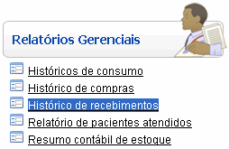
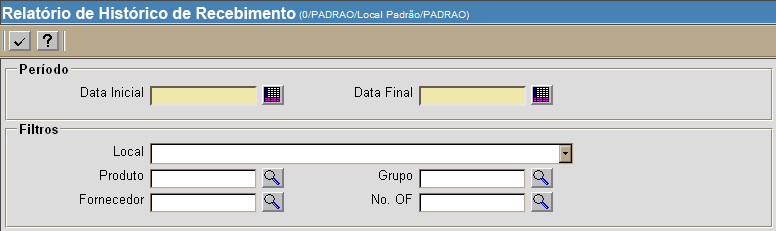
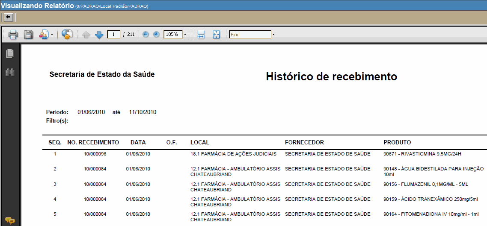

Histórico de Recebimentos [ Voltar ]
Utilize esta tela para gerar um relatório contendo o
histórico
de recebimentos em um determinado período. O relatório pode ser
específico a um determinado local, produto, fornecedor, grupo ou ordem
de fornecimento.
O formulário"Histórico de recebimento"
encontra-se dentro do menu "Relatórios
Gerenciais".

Ao clicar no formulário, a seguinte tela
será exibida:

Para visualizar o
relatório, siga os passos abaixo:
1º Passo:
configure o período e filtros do relatório. Os campos em
amarelo são obrigatórios.
- Data inicial/final.
Informe as datas inicial e final para o relatório.
- Local.
Se desejar gerar o relatório para um local específico, informe-o aqui.
- Produto. Se
desejar gerar o relatório para um produto específico, informe-o aqui.
- Grupo. Se
desejar gerar o relatório para um grupo específico, informe-o aqui.
- Fornecedor. Se
desejar gerar o relatório para um fornecedor específico, informe-o aqui.
- N°. OF.
Se desejar gerar o relatório para uma ordem de fornecimento específica,
informe-a aqui.
2º
Passo: clique no botão para processar
o histórico. para processar
o histórico.

Para imprimir o relatório, clique no botão  [Imprimir]
do navegador. Para voltar à tela anterior, clique em [Imprimir]
do navegador. Para voltar à tela anterior, clique em  [Voltar]. [Voltar].
Ir
para o topo da página
|